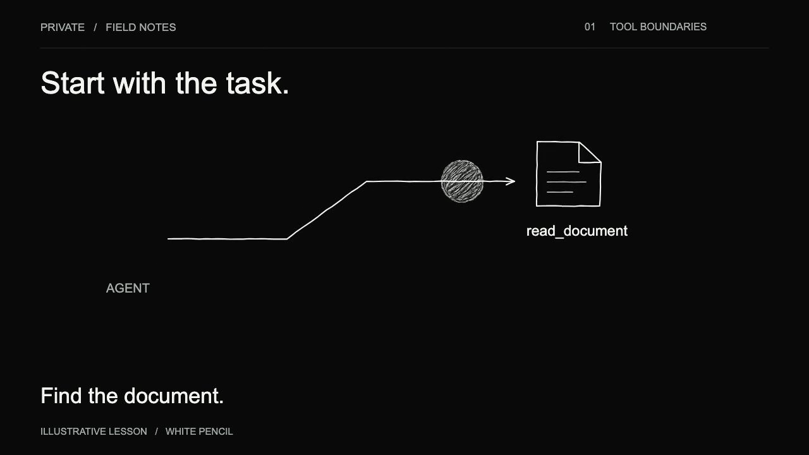
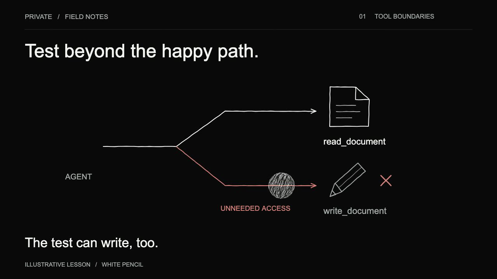
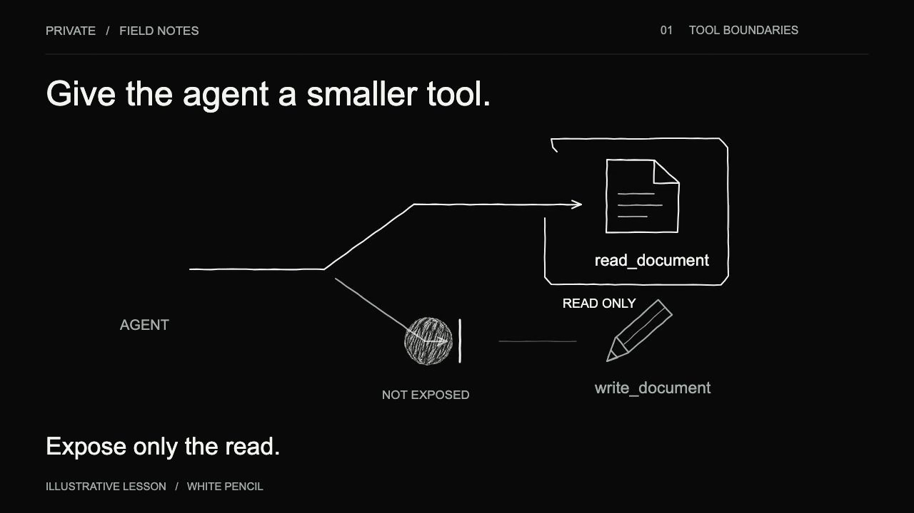
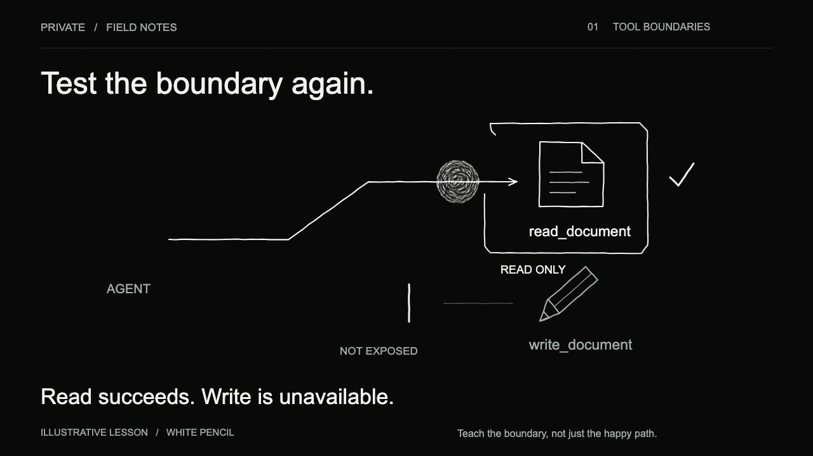

Dry white pencil on PRIVATE black. An 18-second study in making a tool boundary visible: find the document, test the extra access, narrow the tool, then test again.
Reduced motion is enabled. The complete lesson is available in the still frames below. Select Play study to watch deliberately.
The complete lesson / still framesGive the agent a smaller tool.

01 / Start with the task
The task is to find a document. A read capability is enough.

02 / Test beyond the happy path
The test reaches a write tool too. The available capabilities exceed the task.

03 / Narrow the tool
Expose only the read capability. Keep the write capability outside the available tool set.

04 / Test the boundary again
Verify both outcomes: the intended read succeeds and the unnecessary write is unavailable.
Illustrative teaching example. The animation does not verify enforcement in a deployed system.
Material / movement / typeOrganic marks. Quiet surroundings.
Three pencil redraws at 8 fps, with deliberate movement at 24 fps. Still captions, anchored contours and pauses for the evidence. The original warm-paper Graphite Motion style remains available.
PRIVATE ink
#090909Pencil
#f3f3f0Failure annotation
#d68179
Read the transcript
Start with the task. Find the document. Test beyond the happy path. The test can write, too. Give the agent a smaller tool. Expose only the read. Test the boundary again. Read succeeds. Write is unavailable. Teach the boundary, not just the happy path.